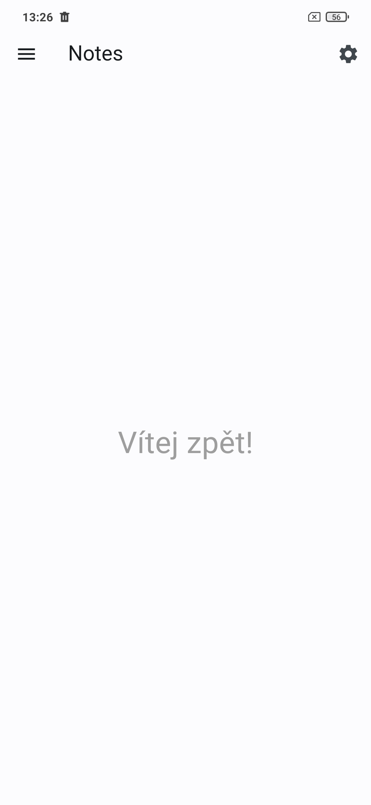
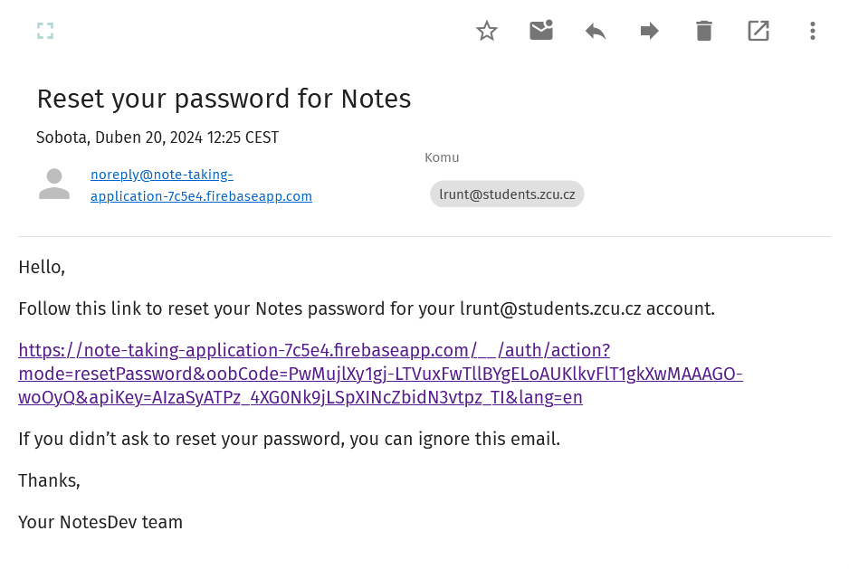

Introduction
Thank you for choosing Notes to manage your notes and tasks. In this manual, I will show you how to use the app so you can fully utilize its potential for creating, saving, and organizing your notes.
Launching the Application
Upon launching the application, an initialization screen with the app's logo will be displayed. This screen indicates that the application is initializing.

Once the application is initialized, the home screen will be displayed to the user. The home screen is shown in the following image.

This page features two buttons:
- Three lines - Opens the slide-out menu
- Gear icon - Opens the application settings
Slide-Out Menu
The slide-out menu contains the user header, a hierarchical data structure, and a sync button with the date of the last sync for logged-in users.

Registration
You can access the registration page through the slide-out menu, by pressing the registration button. When registering, you can choose to sign up using a combination of email and password or with a Google account.

Login
You can reach the login page through the slide-out menu, by pressing the login button. The following image shows the login screen with descriptions of each part of this screen.

- Return to the previous page
- Text field for entering email
- Text field for entering password
- Link to the password recovery page
- Login button
- Link to the new user registration page
- Button for logging in with a Google account
Password Recovery
It can happen that a user forgets their password. For such cases, there is an option to change the password. The following image shows the password change screen.

This page contains a text field for entering the email to which an email with a link for password change will be sent.
After pressing the Send Email button, an email will be sent to the provided address. This email is shown in the next image.

By clicking the link in the incoming email, the user will be redirected to a page with a text field and a button for saving a new password. This page is shown in the next image.

Settings
The user can access the settings page using the gear icon on the main page. The following image shows what the settings page looks like.